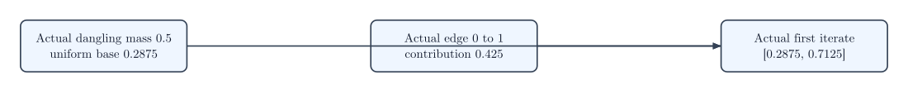
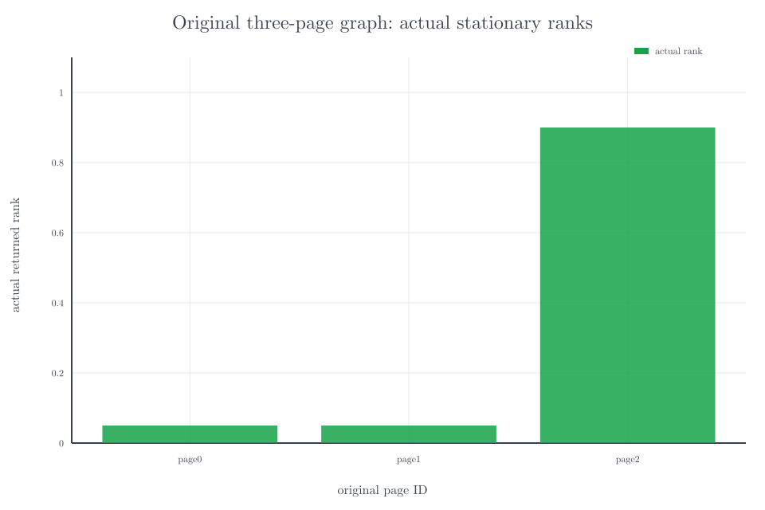
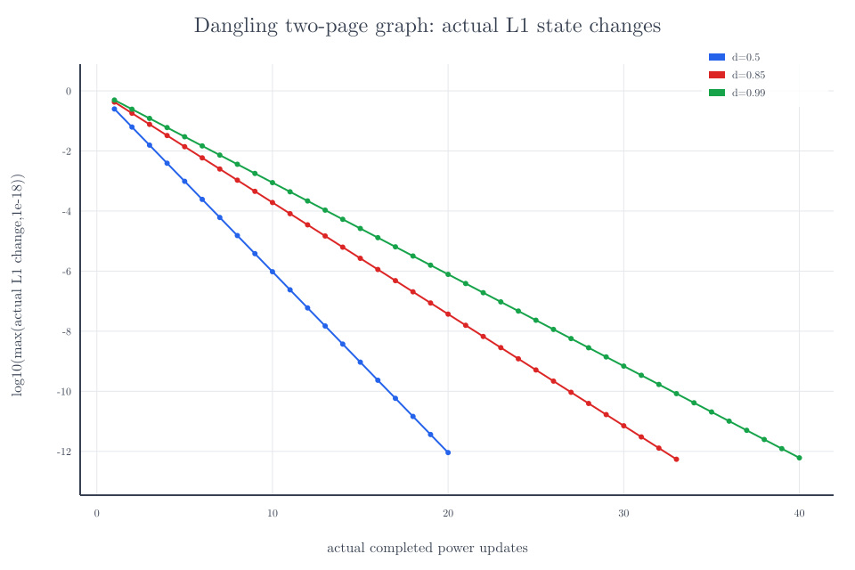
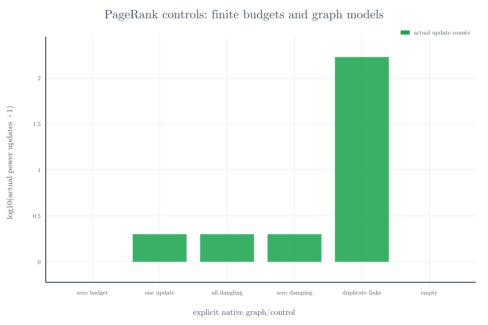

PageRank: actual random-surfer mass transfers
Abstract
Derive uniform-teleport PageRank, inspect one actual update with a dangling page, and retain the original three-page ranking. Canonical before/after vectors and edge-transfer histories show exactly which probability mass moves, while explicit convergence status separates a stopped iteration from a finite-budget approximation.
The stochastic link model
For n>0, a source chooses uniformly among its outgoing edge occurrences. Repeated edges therefore count with multiplicity; self-loops are allowed. A dangling source with no outgoing edge chooses uniformly among all n pages. Let P be this row-stochastic transition matrix. With finite damping0≤d<1, the random-surfer map is
In exact arithmetic, nonnegative unit mass remains unit mass. Since P is row-stochastic, its transpose is nonexpansive in the L1 norm. Consequently
For d<1 this contraction gives a unique fixed point and geometric convergence. The implementation evaluates a serial sparse update in double precision, from a uniform initial vector. It stops strictly when the actual L1 state change is below the tolerance, or returns its budgeted iterate with converged=false. The same exact-model contraction yields an a posteriori bound d/(1−d) times the last state change for the returned iterate; this diagnostic excludes floating arithmetic error and is not a certified enclosure.
One actual update with a dangling page
Use two pages and the single edge0→1. From initial[.5,.5], page1 contributes.5 dangling mass. At d=.85 the uniform base is.2875 per destination, while the actual edge adds.425 to page1. The returned first iterate is[.2875,.7125]. Both the diagram and table read actual producer observations, including the committed destination addition; diagram states are rounded to four decimals for display.
#include <dm/dm.hpp>
int main() {
std::filesystem::create_directories("build");
auto t =
dm::algorithms::page_rank_trace(2, {{0, 1}}, {.85, 1e-12, 1, 1000});
auto &s = t.iterations[0];
auto &e = t.transfers[0];
dm::graphics::Diagram d;
d.node("base", {0, 0},
std::format("Actual dangling mass {}\nuniform base {}",
s.dangling_mass, s.uniform_base));
d.node("edge", {8, 0},
std::format("Actual edge {} to {}\ncontribution {}", e.source,
e.destination, e.contribution));
d.node("after", {16, 0},
std::format("Actual first iterate\n[{:.4f}, {:.4f}]", s.after[0],
s.after[1]));
d.edge("base", "after").edge("edge", "after");
std::print("Actual old vector: `{}`. Actual new vector: `{}`. Actual change: {}. Converged: {}.\n\n",
s.before, s.after, s.l1_change, t.run.converged);
std::print("| actual source | actual destination | old source rank | actual contribution | destination " "before | destination after |\n| ---: | ---: | ---: | ---: | ---: | ---: |\n");
for (auto &e : t.transfers)
std::print("| {} | {} | {} | {} | {} | {} |\n", e.source, e.destination,
e.source_rank, e.contribution, e.destination_before,
e.destination_after);
d.save_svg("build/page_rank_tiny.svg");
}Actual old vector: [0.5, 0.5]. Actual new vector: [0.2875, 0.7124999999999999]. Actual change: 0.42499999999999993. Converged: false.
| actual source | actual destination | old source rank | actual contribution | destination before | destination after |
|---|---|---|---|---|---|
| 0 | 1 | 0.5 | 0.425 | 0.2875 | 0.7124999999999999 |

Retain the original three-page graph
The original graph has0→2,1→2 and2→2. There are no dangling pages. Each of pages0 and1 receives only uniform teleportation, so its stationary score is(1−d)/3=.05 for d=.85; the remaining.9 belongs to page2. The self-loop retains page2’s link-following mass. These values follow from the graph model and are independently checked against the actual canonical result below.
#include <dm/dm.hpp>
int main() {
std::filesystem::create_directories("build");
auto t =
dm::algorithms::page_rank_trace(3,
dm::algorithms::page_rank_demo_edges());
std::print("Actual complete updates: {}. Actual edge additions: {}. Actual strict-change convergence: " "{}. Actual score sum: {:.15f}.\n\n",
t.run.iterations, t.run.edge_transfers, t.run.converged,
std::accumulate(t.run.scores.begin(), t.run.scores.end(), 0.));
std::print("| page | actual returned rank |\n| ---: | ---: |\n");
for (std::size_t i = 0; i < t.run.scores.size(); ++i)
std::print("| {} | {:.15f} |\n", i, t.run.scores[i]);
auto p =
dm::graphics::RPlot::barplot(t.run.scores, {"page0", "page1", "page2"},
"actual rank");
p.title("Original three-page graph: actual stationary ranks").x_label(
"original page ID").y_label("actual returned rank").y_limits(0, 1.1).save_svg("build/page_rank_original.svg");
}Actual complete updates: 2. Actual edge additions: 6. Actual strict-change convergence: true. Actual score sum: 1.000000000000000.
| page | actual returned rank |
|---|---|
| 0 | 0.050000000000000 |
| 1 | 0.050000000000000 |
| 2 | 0.900000000000000 |

Follow actual convergence on the dangling graph
For0→1 with page1 dangling, let r_0 be page0’s stationary score. The update equation gives r_0=(1−d)/2+dr_1/2 with r_1=1−r_0, hence r_0=1/(2+d). The table compares native returned scores with that analytical value for several damping factors. Every plotted state change comes from an actual complete update; no report-side power iteration is used.
This example’s nonconstant mode contracts by−d/2, so the general worst-case factor d is conservative here. Higher damping can require more updates, but a universal wall-clock statement cannot be read from this one graph or from iteration counts alone.
#include <dm/dm.hpp>
int main() {
std::filesystem::create_directories("build");
auto p = dm::graphics::RPlot::create();
std::vector<dm::graphics::RGBA> colors{{37, 99, 235, 255},
{220, 38, 38, 255},
{22, 163, 74, 255}};
std::vector<std::string> labels;
std::print("| damping | actual updates | actual page0 | analytic page0 | actual final change | " "exact-model bound diagnostic | converged |\n| ---: | ---: | ---: | ---: | ---: | ---: | --- " "|\n");
std::size_t color = 0;
for (double d : {.5, .85, .99}) {
auto t =
dm::algorithms::page_rank_trace(2, {{0, 1}},
{d, 1e-12, 1000, 100000});
std::vector<double> x, y;
for (auto &s : t.iterations) {
x.push_back(s.ordinal);
y.push_back(std::log10(std::max(s.l1_change, 1e-18)));
}
auto label = std::format("d={}", d);
labels.push_back(label);
p.lines(x, y, label, colors[color]).points(x, y, colors[color++], 3.);
std::print("| {} | {} | {:.15f} | {:.15f} | {:.5e} | {:.5e} | {} |\n",
d, t.run.iterations, t.run.scores[0], 1 / (2 + d),
t.run.last_change, t.run.contraction_bound, t.run.converged);
}
p.title("Dangling two-page graph: actual L1 state changes").x_label(
"actual completed power updates").y_label("log10(max(actual L1 change,1e-18))").save_svg("build/page_rank_convergence.svg");
}| damping | actual updates | actual page0 | analytic page0 | actual final change | exact-model bound diagnostic | converged |
|---|---|---|---|---|---|---|
| 0.5 | 20 | 0.400000000000091 | 0.400000000000000 | 9.09495e-13 | 9.09495e-13 | true |
| 0.85 | 33 | 0.350877192982375 | 0.350877192982456 | 5.45564e-13 | 3.09153e-12 | true |
| 0.99 | 40 | 0.334448160535218 | 0.334448160535117 | 6.08458e-13 | 6.02373e-11 | true |

Multiplicity, empty graphs and finite budgets
Duplicate links split a source’s mass by its full occurrence count; changing their multiplicity can change the stochastic model. No-edge graphs are entirely dangling and preserve the uniform vector. At d=0 the next vector is uniform regardless of edges. The control chart displays log10(update count+1), while the table retains raw update counts. A nonempty zero-update run returns its uniform initialization with converged=false; an empty graph returns an empty vector with converged=true, provided no invalid edge or numerical control is supplied.
Complete edge endpoints, finite d in[0,1) and finite positive tolerance are validated before graph allocation and iteration. One update costs O(n+E), and ordinary storage is O(n+E). Every source uses the unchanged old rank vector; actual additions are grouped by ascending source and original occurrence order within that source, preserving the original valid-input numerical trajectory.
The owned trace includes graph endpoints, initial/final scores and every complete update/edge addition. Logical admission counts4+2E+2n + I(1+2n)+T, for I actual updates and T actual edge transfers. The four root units represent vertex count and three numerical controls; fixed diagnostic fields are included within their records. Default1000000, zero disables. Base admission precedes graph/input copies, and online admission precedes each owned iteration/transfer. This is not a byte or peak-memory bound, and failure returns no partial trace.
#include <dm/dm.hpp>
int main() {
std::filesystem::create_directories("build");
std::vector<std::string> labels{"zero budget", "one update", "all dangling",
"zero damping", "duplicate links", "empty"};
std::vector<dm::algorithms::PageRankRun> runs;
runs.push_back(dm::algorithms::page_rank_run(2, {{0, 1}}, {.85, 1e-12, 0, 0}));
runs.push_back(dm::algorithms::page_rank_run(2, {{0, 1}}, {.85, 1e-12, 1, 0}));
runs.push_back(dm::algorithms::page_rank_run(2, {}));
runs.push_back(dm::algorithms::page_rank_run(3,
dm::algorithms::page_rank_demo_edges(),
{0., 1e-12, 1000, 0}));
runs.push_back(dm::algorithms::page_rank_run(3,
{{0, 1}, {0, 1}, {0, 2},
{1, 0}, {2, 0}}));
runs.push_back(dm::algorithms::page_rank_run(0, {}));
std::vector<double> updates;
std::print("| control | actual complete updates | actual score sum | actual last change | converged " "|\n| --- | ---: | ---: | ---: | --- |\n");
for (std::size_t i = 0; i < runs.size(); ++i) {
auto &r = runs[i];
updates.push_back(std::log10(1. + double(r.iterations)));
std::print("| {} | {} | {:.12f} | {:.5e} | {} |\n", labels[i],
r.iterations,
std::accumulate(r.scores.begin(), r.scores.end(), 0.),
r.last_change, r.converged);
}
auto p =
dm::graphics::RPlot::barplot(updates, labels, "actual update counts");
p.title("PageRank controls: finite budgets and graph models").x_label(
"explicit native graph/control").y_label("log10(actual power updates +1)").save_svg("build/page_rank_controls.svg");
}| control | actual complete updates | actual score sum | actual last change | converged |
|---|---|---|---|---|
| zero budget | 0 | 1.000000000000 | 0.00000e+00 | false |
| one update | 1 | 1.000000000000 | 4.25000e-01 | false |
| all dangling | 1 | 1.000000000000 | 0.00000e+00 | true |
| zero damping | 1 | 1.000000000000 | 0.00000e+00 | true |
| duplicate links | 168 | 1.000000000000 | 9.25260e-13 | true |
| empty | 0 | 0.000000000000 | 0.00000e+00 | true |

Verification
This ten-report batch passes 50 CTest cases, 25 directly instrumented ASan/UBSan
cases, 174 compiled and executed public examples, 707/707 scoped documentation
definitions and ten representative clangd hovers. Independent Python checks
verify 5662 records with 27916 checks: optimal prefix-code costs, train-only
Titanic category counts and held-out confusion, and all 5001 actual original
Lorenz RK4 steps. Frozen valid-input comparisons cover all ten producers, with
intentional guard, ownership, arithmetic and endpoint corrections stated
separately. Twelve checkout headers and twelve byte-identical installed
development headers compile independently; an installed-header native consumer
links and runs. All 40 complete programs execute, and 40 native figures have
been visually reviewed. HTML/Markdown exports preserve computed results and
image bytes. These are scoped native checks. Receipts:
build/mepml-conversion/batch-264-273/.